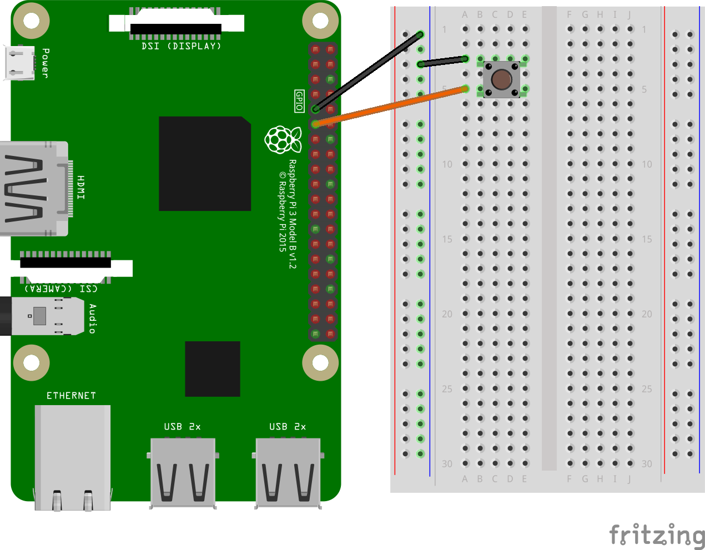

One leg to GPIO 17 (physical pin 11)
Other leg to ground (physical pin 9)
No resistor needed: gpiozero turns on the Pi’s internal pull-up for you.
from gpiozero import Button
from signal import pause
b = Button(17)
b.when_pressed = lambda: print("press")
pause()
